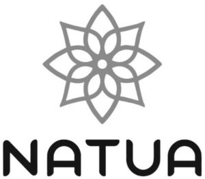

Trade Mark Journal No.2025/034 22 August 2025
WO0000001853469 (3,5)
Office of origin: Italy
Date of International Registration:17 January 2025
Date of designation in the UK:
9 July 2025

- Class 3
- Cosmetics; perfumery; perfumes; cosmetic creams; face creams for cosmetic use; body cream; hand creams; skin care lotions [cosmetic]; beauty masks; cosmetic body scrubs; shaving cream; after-shave lotions; shaving foam; soap; cakes of toilet soap; bath foam; foams for use in the shower; shampoos; hair balsam; hair care lotions; tints for the hair; hair gel; hair spray; oils for cosmetic purposes; talcum powder, for toilet use; make-up removing preparations; antiperspirants [toiletries]; depilatory preparations; hair removal and shaving preparations; non-medicated foot lotions; dentifrices; nail varnish; nail varnish removers; moist wipes for sanitary and cosmetic purposes; make-up pads of cotton wool.
- Class 5
- Skin care creams for medical use; medicated lotions for the hands; face cream (medicated -); body creams [medicated]; pharmaceutical creams; protective creams (medicated -); medicinal mud; balms for medical purposes; medicinal ointments; antiseptic ointments; medicated hair lotions; scalp treatments (medicated -); pharmaceutical preparations for hair care; bath salts for medical purposes; bath preparations for medical purposes; disinfectants; disinfectants for hygiene purposes; disinfectant soap; antibacterial soap; medicated soap; medicated handwash; antibacterial handwash; disinfecting handwash; antibacterial hand lotions; medicated dental rinses; adhesive plasters; sanitary preparations for medical purposes; antiseptic cleansers; antibacterial pharmaceuticals; pharmaceuticals; medical preparations; plasters, materials for dressings.
REVICOS S.R.L.
Representative: ING. CLAUDIO BALDI S.R.L., VIALE CAVALLOTTI 13, I-60035 JESI (AN), ITALY